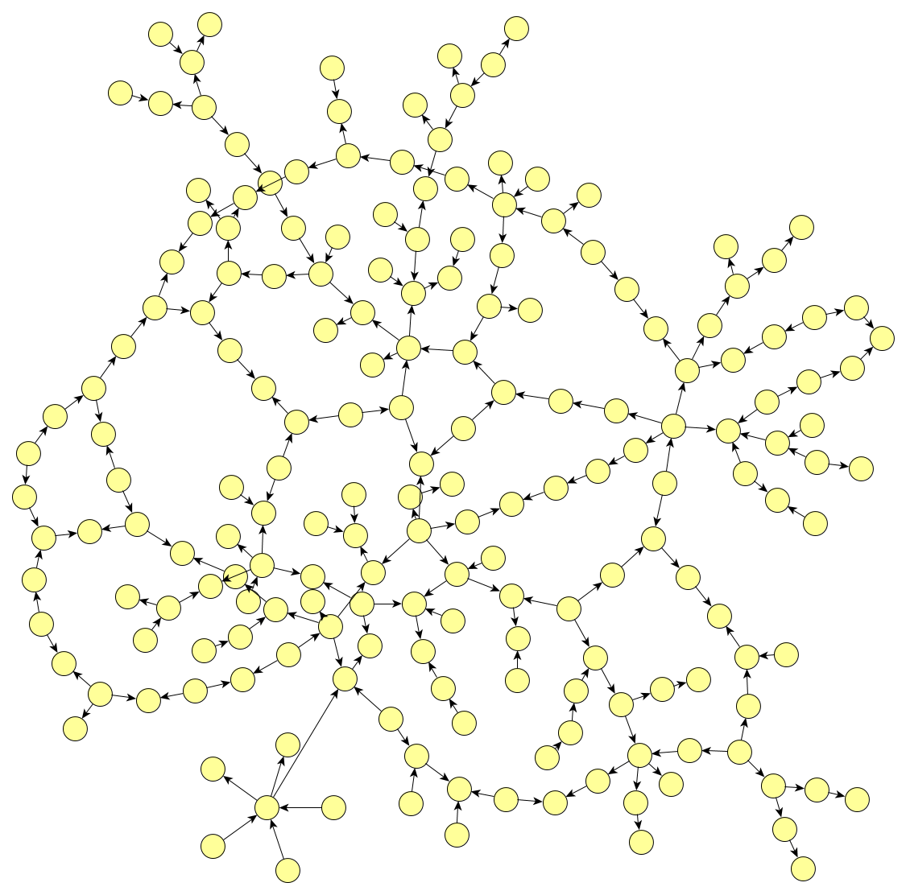

First article on graph-oriented programming

In 2013, I started a personal project around directed attributed graph databases. The objective was to find a programming model that would enable the software to be as "soft" as the database.
First works
The concept was defined and setup during 2014 and 2015.
Two articles on graph transformations were a crucial inspiration to the project.
The AGG Aproach published in the volume 2 of the "Handbook of Graph Grammars". AGG was particularly inspiring.
Ermel, Claudia, Michael Rudolf, and Gabriele Taentzer. "The AGG approach: Language and environment." Handbook Of Graph Grammars And Computing By Graph Transformation: Volume 2: Applications, Languages and Tools. 1999. 551-603.
Another article from the same book was also a source of inspiration, "The Progres approach" (which doesn't seem to be available online).
Schürr, Andy, Andreas J. Winter, and Albert Zündorf. "The PROGRES approach: Language and environment." Handbook Of Graph Grammars And Computing By Graph Transformation: Volume 2: Applications, Languages and Tools. 1999. 487-550.
Beginning of 2015, the graph-oriented programming concept was completed, and its capability of solving the useless technical debt was theoretically proven.
The graph transformations are playing a core role in graph-oriented programming.
Closed-source prototype
In 2016, it was prototyped in a company called GraphApps in a closed source approach. I am no longer part of this company.
Global article on graph-oriented programming
A very first article was written in 2016 to explain all the concepts of this programming model.
This article is far from being perfect and didactic but it browses a lot of topics that would deserve special attention (especially in the part concerning graph transformations).
The original article can be found here: The graph-oriented programming paradigm.
(July 2018)